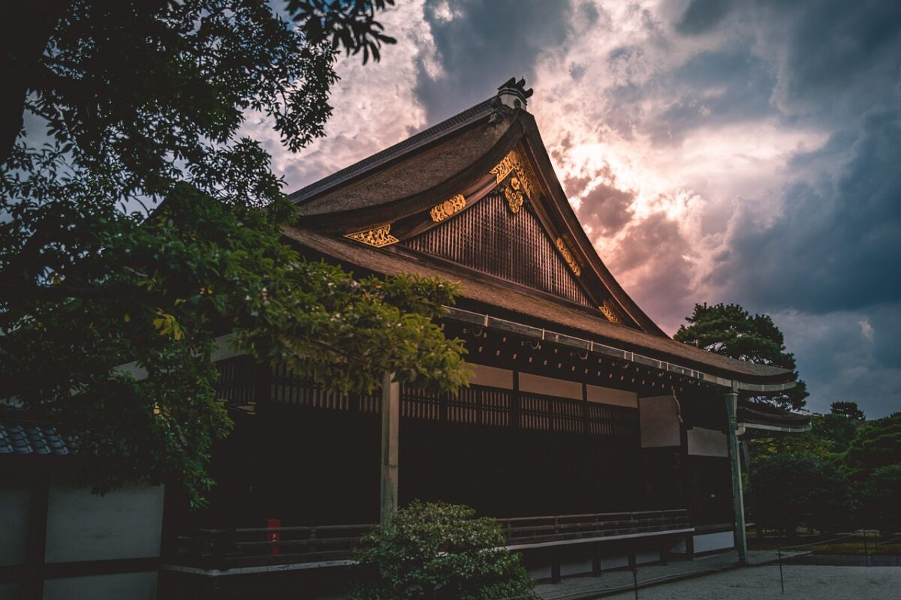
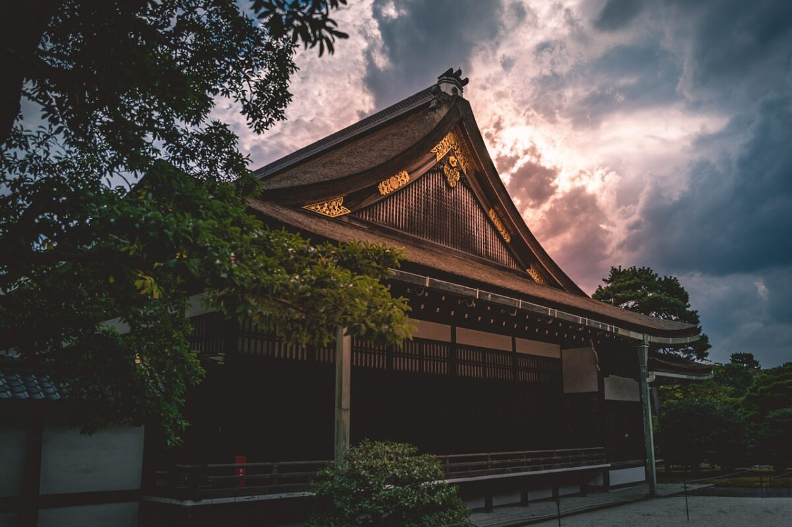

Kyoto Imperial Palace
The Kyoto Imperial Palace used to be the residence of Japan's Imperial Family until
1868, when the emperor and capital were moved from Kyoto to Tokyo. It is located in the spacious Kyoto
Imperial Park, an attractive park in the center of the city that also encompasses
the Sento Imperial Palace, which served retired emperors, and a few other attractions..
The current Imperial Palace was reconstructed in 1855 after it had burnt down and moved around town
repeatedly over the centuries. The complex is enclosed by long walls and consists of several gates,
halls and gardens. The enthronement ceremonies of Emperors Taisho and Showa were still held in the
palace's main hall. Tokyo Imperial Palace is now used for enthronement ceremonies.
Besides the Imperial Palace and the Sento Palace grounds, a few other historic sites are located within
Kyoto Imperial Park, including the Kaninnomiya Mansion, a former residence of court nobles that is open
to the public in the park's southwestern corner. Not far away stands a small branch shrine of Miyajima's
famous Itsukushima Shrine on a small island of a pond.
The 1300 meter long and 700 meter wide park also serves as recreational space for both tourists and
residents, featuring attractive, broad gravel paths, lawns and tree groves. A pretty group of weeping
cherry trees stands beside Konoe Pond in the park's northwestern corner and is usually in bloom for two
to three weeks from late March to mid April.
Address: 3 Kyotogyoen, Kamigyo Ward, Kyoto, 602-0881
Official Site: none
Gallery

 
